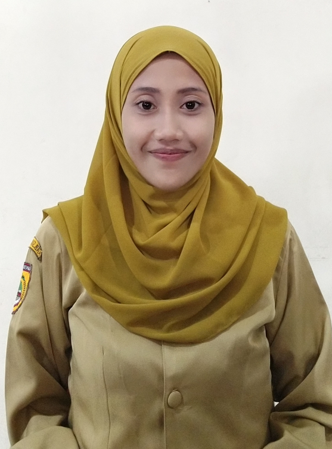

Pemerintahan & Kelembagaan Desa Gadingan
Visi & Misi RPJMDes, Susunan 9 Aparatur Pemerintahan, Transparansi APBDes, serta Sinergi Lembaga Kemasyarakatan
Visi & Misi Desa Gadingan
Pedoman pembangunan jangka menengah (RPJMDes) dan nilai pengabdian aparatur Pemerintah Desa Gadingan.
Visi Pembangunan Desa:
"DESA INDUSTRI, AGAMIS DAN BERBUDAYA"
Semboyan Daerah: "Maju, Aman, Konstitusional, Mantap, Unggul, & Rapi" (MAKMUR)- Desa Industri: Terwujudnya desa yang masyarakatnya hampir 80% bergerak di bidang industri rumah tangga (shuttlecock, karak, kerupuk, ampyang).
- Agamis: Terwujudnya masyarakat yang menjadikan ajaran agama sebagai landasan hidup sehari-hari.
- Berbudaya: Terwujudnya masyarakat yang menjaga, menghormati, dan melestarikan adat istiadat Budaya Jawa.
Tujuh Misi Pokok Pemerintah Desa:
-
Penguatan Sentra Industri Kerakyatan: Membina daya saing UMKM rumah tangga (pengrajin shuttlecock dan olahan pangan tradisional) melalui pendampingan perizinan, akses permodalan, dan pemasaran digital.
-
Pelayanan Publik Prima & Digital: Menyelenggarakan pelayanan administrasi kependudukan yang cepat, ramah, gratis, dan terintegrasi dengan Sistem Informasi Desa (SID).
-
Tata Kelola APBDes Bersih & Antikorupsi: Mewujudkan transparansi anggaran desa dan implementasi indikator Desa Antikorupsi yang dapat diakses terbuka oleh seluruh masyarakat.
-
Pembangunan Infrastruktur & Pertanian: Meningkatkan jaringan jalan lingkungan, drainase, rehabilitasi Rumah Tidak Layak Huni (RTLH), serta irigasi lahan pertanian seluas 127 Ha.
-
Kehidupan Beragama yang Harmonis: Memfasilitasi kegiatan keagamaan, pengajian rutin, serta menjaga kerukunan antarumat beragama di seluruh RT/RW.
-
Pelestarian Budaya Jawa & Gotong Royong: Menghidupkan tradisi lokal, kesenian daerah, serta semangat sambatan dan kerja bakti warga.
-
Sinergi Kelembagaan Desa: Memperkuat kemitraan konstruktif bersama BPD, LPMD, PKK, Karang Taruna, dan Satlinmas.

Parji, A.Md.
Kepala Desa Gadingan, Kec. Mojolaban
Pimpinan Pemerintah Desa GadinganKepemimpinan & Tata Kelola Pemerintahan Desa Gadingan
Pemerintah Desa Gadingan bersama BPD dan Panitia Pemilihan secara aktif menjaga kondusivitas tahapan demokrasi desa (penetapan DPS dan fasilitasi Pilkades) serta memastikan pelayanan masyarakat di Balai Desa Gadingan berjalan tertib, aman, dan tanpa pungutan biaya.
Struktur Organisasi Pemerintah Desa
Susunan aparatur Pemerintah Desa Gadingan berdasarkan SOTK Permendagri No. 84 Tahun 2015 yang terdiri atas Kepala Desa, Sekretariat, Pelaksana Teknis, dan Kepala Dusun.
Profil & Foto Pamong Desa Aktif
Dokumentasi resmi aparatur Pemerintah Desa Gadingan bersumber langsung dari gadingan-sukoharjo.desa.id/struktur
PARJI, A.Md.
KEPALA DESA"Mengabdi dengan tulus demi kemajuan dan kemakmuran warga Gadingan"
KERNADI, S.Kom.
SEKRETARIS DESA"Tertib administrasi dan digitalisasi untuk pelayanan yang transparan"

DIAH PUTRI PRASTIWI, S.Kom.
KAUR TATA USAHA & UMUM"Melayani dengan senyum, ketelitian, dan tanggung jawab"
YULI PONCO SAPUTRO
KAUR PERENCANAAN"Merencanakan pembangunan desa secara partisipatif dan terukur"
ERIKA WAHYU SEJATI, S.Kom.
KASI PEMERINTAHAN"Akurasi data kependudukan adalah fondasi pembangunan desa"
GURUH TRI WIJAYA, A.Md.
KASI KESEJAHTERAAN"Mendorong pemberdayaan ekonomi dan kesejahteraan sosial warga"
BAGUS WIBOWO P. A., S.H.
KASI PELAYANAN"Kepastian hukum dan kemudahan layanan bagi setiap warga"
SUTANTO
KEPALA DUSUN I"Menjaga kerukunan dan gotong royong lingkungan Dusun I"
SARIYANTO
KEPALA DUSUN II"Hadir menyerap aspirasi dan mendampingi warga Dusun II"
Daftar Urut Jabatan Aparatur Pemerintah Desa Gadingan
Sesuai Permendagri No. 84 Tahun 2015 & Terverifikasi Portal Resmi Desa (gadingan-sukoharjo.desa.id)
| Unsur Struktur / Jabatan | Nama Pejabat / Pamong Desa | Klasifikasi Tugas | Status Jabatan |
|---|---|---|---|
| Kepala Desa |
PARJI, A.Md.
|
Pimpinan Penyelenggara Pemerintahan | Kepala Desa |
| Sekretaris Desa | KERNADI, S.Kom. | Pimpinan Sekretariat & Koordinator SID | Aparatur Aktif |
| Kaur Tata Usaha & Umum | DIAH PUTRI PRASTIWI, S.Kom. | Sekretariat (Kearsipan, Surat & Aset) | Aparatur Aktif |
| Kaur Perencanaan | YULI PONCO SAPUTRO | Sekretariat (Program RKPDes & RPJMDes) | Aparatur Aktif |
| Kasi Pemerintahan | ERIKA WAHYU SEJATI, S.Kom. | Pelaksana Teknis (Adminduk & Pertanahan) | Aparatur Aktif |
| Kasi Kesejahteraan | GURUH TRI WIJAYA, A.Md. | Pelaksana Teknis (Pembangunan & Kesra) | Aparatur Aktif |
| Kasi Pelayanan | BAGUS WIBOWO PUTRA ABADI, S.H. | Pelaksana Teknis (Layanan Warga & Sosial) | Aparatur Aktif |
| Kepala Dusun I (Kadus I) | SUTANTO | Pelaksana Kewilayahan Dusun I | Kepala Dusun |
| Kepala Dusun II (Kadus II) | SARIYANTO | Pelaksana Kewilayahan Dusun II | Kepala Dusun |
Tugas & Fungsi Pemerintahan
Uraian tugas pokok dan wewenang perangkat Desa Gadingan dalam penyelenggaraan tata kelola pemerintahan desa.
1. Kepala Desa (Parji, A.Md.)
Menyelenggarakan urusan pemerintahan, pembangunan wilayah, dan pembinaan kemasyarakatan Desa Gadingan. Wewenang utama meliputi:
- Memimpin penyelenggaraan pemerintahan desa berdasarkan kebijakan bersama BPD.
- Mengajukan, membahas, dan menetapkan Peraturan Desa (Perdes) bersama BPD.
- Menetapkan APBDes (Anggaran Pendapatan dan Belanja Desa) secara partisipatif dan akuntabel.
- Membina pelaku UMKM industri rumah tangga, ketertiban lingkungan, dan kerukunan warga.
2. Sekretaris Desa (Kernadi, S.Kom.)
Memimpin Sekretariat Desa Gadingan dalam mengelola administrasi perkantoran, keuangan, dan Sistem Informasi Desa:
- Pelaksanaan tata naskah dinas, surat-menyurat resmi, kearsipan, dan pelaporan berkala.
- Mengoordinasikan pelaksanaan tugas Kepala Urusan (Kaur) dan Kepala Seksi (Kasi).
- Penyusunan rancangan APBDes, RPJMDes, RKPDes, dan laporan pertanggungjawaban.
- Pengelolaan inovasi layanan digital dan keterbukaan informasi publik desa.
3. Unsur Sekretariat (Kaur)
Membantu Sekretaris Desa dalam administrasi ketatausahaan dan perencanaan:
- Kaur TU & Umum (Diah Putri Prastiwi, S.Kom.): Pengelolaan surat keluar/masuk, tata kearsipan, inventaris aset desa, dan layanan ruang sekretariat.
- Kaur Perencanaan (Yuli Ponco Saputro): Penyusunan dokumen RKPDes, RPJMDes, musrenbangdes, serta inventarisasi data pembangunan.
4. Pelaksana Teknis (Kasi)
Unsur pembantu operasional Kepala Desa di bidang teknis:
- Kasi Pemerintahan (Erika Wahyu Sejati, S.Kom.): Administrasi kependudukan (SIAK/Pidekso), pertanahan, dan ketenteraman ketertiban.
- Kasi Kesejahteraan (Guruh Tri Wijaya, A.Md.): Pembangunan infrastruktur, RTLH, bantuan pangan, dan pemberdayaan ekonomi UMKM.
- Kasi Pelayanan (Bagus Wibowo Putra Abadi, S.H.): Pelayanan surat pengantar warga, pembinaan keagamaan, dan sosial budaya.
5. Pelaksana Kewilayahan (Kadus)
Membantu Kepala Desa di wilayah Dusun I (Sutanto) dan Dusun II (Sariyanto):
- Pembinaan ketenteraman, ketertiban, dan kerukunan warga di tingkat RT/RW dan dukuh.
- Mobilisasi swadaya gotong royong dan penyaluran aspirasi warga ke Pemerintah Desa.
- Pendampingan pendataan penerima bantuan sosial dan pengawasan pembangunan fisik di dusun.
Transparansi APBDes & Desa Antikorupsi
Komitmen keterbukaan informasi pengelolaan keuangan desa dan penerapan lima pilar Desa Antikorupsi di Desa Gadingan.
Struktur Pengelolaan APBDes
UU No. 6 Tahun 2014Pengelolaan Anggaran Pendapatan dan Belanja Desa (APBDes) Gadingan dilaksanakan secara transparan melalui musyawarah perencanaan desa (Musrenbangdes), dipublikasikan melalui baliho infografis di depan Balai Desa serta kanal Sistem Informasi Desa.
| Bidang Belanja & Pembiayaan Desa | Fokus Alokasi Utama | Status Publikasi |
|---|---|---|
| 1. Penyelenggaraan Pemerintahan Desa | Operasional kantor, penghasilan tetap, & layanan digital SID | Terpublikasi |
| 2. Pelaksanaan Pembangunan Desa | Infrastruktur jalan, drainase, irigasi pertanian, & posyandu | Terpublikasi |
| 3. Pembinaan Kemasyarakatan | Kegiatan lembaga desa, kepemudaan, budaya, & keagamaan | Terpublikasi |
| 4. Pemberdayaan Masyarakat | Pelatihan UMKM industri rumah tangga & ketahanan pangan | Terpublikasi |
| 5. Penanggulangan Bencana & Mendesak | BLT Dana Desa, bantuan RTLH, & tanggap darurat | Terpublikasi |
5 Pilar Indikator Desa Antikorupsi
Keterbukaan PublikSelaras dengan program pembinaan Desa Antikorupsi Kabupaten Sukoharjo, Pemerintah Desa Gadingan menerapkan 5 komponen tata kelola pemerintahan bersih:
Lembaga Kemasyarakatan Desa
Mitra strategis Pemerintah Desa Gadingan dalam menampung aspirasi, menggerakkan pembangunan, dan memberdayakan warga.
BPD (Badan Permusyawaratan Desa)
Mitra PemerintahanLembaga perwujudan demokrasi dalam penyelenggaraan pemerintahan Desa Gadingan yang berfungsi menetapkan Perdes bersama Kepala Desa, menampung aspirasi masyarakat, dan mengawasi kinerja pemerintah desa.
Peran Aktif BPD Gadingan:
- Membahas dan menyepakati Rancangan Peraturan Desa (Raperdes) dan APBDes setiap tahun anggaran.
- Menyelenggarakan musyawarah desa serta mengawal tahapan Pemilihan Kepala Desa (Pilkades) secara demokratis dan kondusif.
- Menyerap dan menyalurkan aspirasi warga Dusun I dan Dusun II.
Tim Penggerak PKK Desa Gadingan
Kesejahteraan KeluargaMitra kerja pemerintah desa dalam pemberdayaan perempuan, peningkatan kesehatan ibu dan anak, serta ketahanan ekonomi keluarga.
Program Unggulan PKK Gadingan:
- Pembinaan kader Posyandu Balita dan Posyandu Lansia di seluruh RW serta pencegahan stunting lewat Pemberian Makanan Tambahan (PMT).
- Pelatihan keterampilan perempuan dan penguatan usaha pangan rumah tangga (olahan karak, kerupuk, dan ampyang).
- Pelaksanaan 10 Program Pokok PKK dan gerakan pemanfaatan pekarangan rumah (Hatinya PKK).
Karang Taruna
KepemudaanWadah pengembangan generasi muda Desa Gadingan di bidang olahraga (terutama bulu tangkis yang sejalan dengan sentra industri shuttlecock), kesenian, dan wirausaha muda.
Aktif menggerakkan kegiatan peringatan hari besar nasional, bakti sosial, dan pelestarian budaya lokal.
LPMD
PembangunanLembaga Pemberdayaan Masyarakat Desa yang membantu menyusun rencana pembangunan partisipatif serta menggerakkan swadaya gotong royong masyarakat.
Mendampingi pelaksanaan perbaikan jalan lingkungan, saluran irigasi, dan program rehab rumah warga.
Satlinmas Desa Gadingan
KetertibanSatuan Perlindungan Masyarakat yang bertugas menjaga ketenteraman, ketertiban umum, dan kesiapsiagaan bencana di wilayah Desa Gadingan.
Bersinergi dengan Bhabinkamtibmas dan Babinsa dalam pengamanan tahapan Pilkades, penyaluran bantuan pangan, serta kegiatan masyarakat.